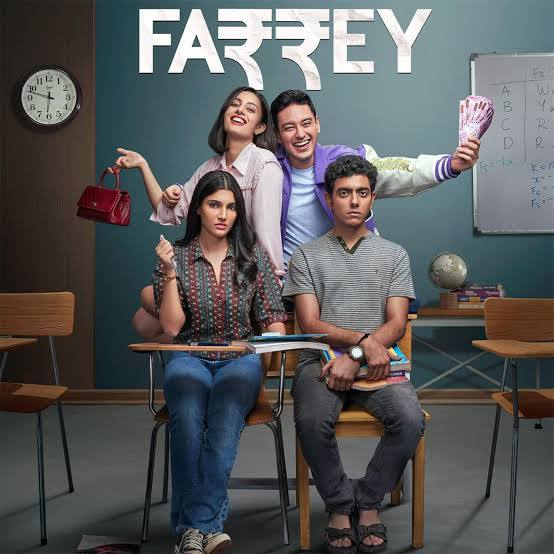
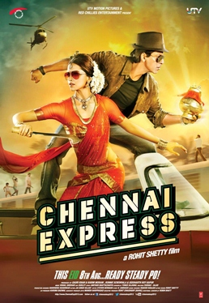
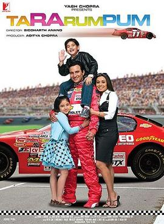

PK (2014) is a Hindi-language science fiction comedy-drama directed by Rajkumar Hirani.
The film stars Aamir Khan as an alien who arrives on Earth and loses the device
that allows him to communicate with his spaceship. His innocent and childlike questions
about human behavior, particularly concerning religion and societal norms, challenge the
status quo and provoke thought among those he encounters. Anushka Sharma co-stars
as Jagat "Jaggu" Janani, a journalist who assists PK in his quest. The film satirizes
religious dogma and superstitions, encouraging viewers to reflect on the true essence of faith.
Farrey (2023)

Farrey (2023) is a Hindi-language heist thriller directed by Soumendra Padhi.
The film marks the debut of Alizeh Agnihotri, who portrays Niyati, an orphaned prodigy from Delhi.
After topping national board exams, Niyati earns a scholarship to an elite school.
There, she becomes entangled in a sophisticated cheating scheme orchestrated by her
wealthy classmates, who exploit her intelligence to manipulate exam outcomes.
Aashiqui 2 (2013)
Aashiqui 2 (2013) is a Hindi-language romantic musical drama directed by Mohit Suri.
The film stars Aditya Roy Kapur as Rahul Jaykar, a once-famous singer battling alcoholism,
and Shraddha Kapoor as Aarohi Keshav Shirke, an aspiring singer he mentors.
As Rahul helps Aarohi achieve stardom, his personal struggles threaten their relationship
and her burgeoning career. The film explores themes of love, sacrifice, and redemption,
set against a backdrop of soulful music.
Chennai Express (2013)

Chennai Express (2013) is a Hindi-language action comedy directed by Rohit Shetty.
The film stars Shah Rukh Khan as Rahul Mithaiwala, a Mumbai-based bachelor who embarks
on a journey to Rameswaram to fulfill his late grandfather's last wish of immersing his ashes.
During his trip, Rahul inadvertently boards the Chennai Express and encounters
Meenamma (Deepika Padukone), the spirited daughter of a South Indian don. As their journey unfolds,
Rahul becomes entangled in Meenamma's attempts to escape a forced marriage, leading to a series of
comedic and action-packed events. The film blends romance, humor, and cultural contrasts,
offering a vibrant cinematic experience.
Ta Ra Rum Pum (2007)

Ta Ra Rum Pum (2007) is a Hindi-language sports drama directed by Siddharth Anand.
The film stars Saif Ali Khan as Rajveer "RV" Singh, an aspiring race car driver who
rises to fame in the U.S. stock car racing scene. After a severe accident during a race,
RV's career and family life face significant challenges. Alongside his wife
Radhika (Rani Mukerji) and their two children, RV navigates financial hardships and personal
struggles, ultimately striving to reclaim his lost glory and stability for his family.
The film explores themes of perseverance, family bonds, and redemption.